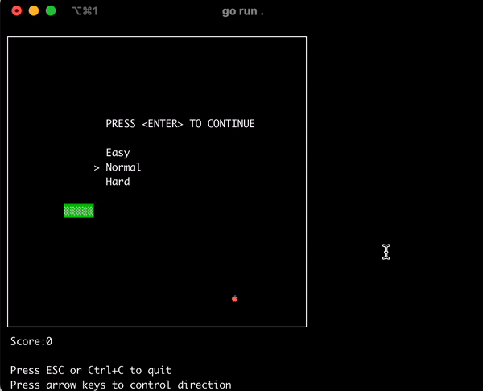

gosnakego: Snake in Your Terminal, Written in Pure Go
gosnakego (MIT) is exactly what the README says: a snake game written in Go. No frameworks, no engine, no config file. You download one binary, run it, steer with arrow keys. It's a small project — low star count, last touched in late 2023 — but it resurfaced on trending lists recently because it hits a sweet spot: it's one of the cleanest little examples of terminal game programming in Go you'll find, with a source tree small enough to read over coffee.
Honestly, that's the reason to care. Not because the world needed another snake clone, but because "render a game loop in a terminal" touches goroutines, input handling, tick timing, and state management — all in a repo where main.go plus a snake/ package is basically the whole story.

Why you'd actually use it
- A five-minute Go build exercise. Clone it, run
go build, and you have a working binary. Then break things on purpose: change the tick rate, resize the board, make food spawn two at a time. Small codebases like this are ideal for learning by modification. - Learn terminal rendering without dependencies. The game draws by writing to standard output — no TUI framework required to follow along, which makes the render loop obvious if you've ever wondered how terminal games work.
- Goroutines in practice. Input handling and game ticking run concurrently; seeing how a tiny game coordinates them is a friendlier introduction than most concurrency tutorials.
- An afternoon fork project. Add a high-score file, wrap-around walls, or obstacle levels. The whole game logic lives under
snake/, so there's nowhere for complexity to hide. - A zero-install office distraction. One static binary, no runtime, works anywhere Go binaries run — including a Raspberry Pi or an SSH box.
Getting started
- Grab the prebuilt binary for your OS from the releases page.
- Move it somewhere on your executable path:
mv ~/Downloads/gosnakego /usr/local/bin/gosnakego chmod +x /usr/local/bin/gosnakego # if needed - Start the game:
gosnakego - Use the arrow keys to control the direction (per official docs). Eat, grow, avoid yourself.
- Prefer building from source? The repo builds with the standard toolchain:
git clone https://github.com/liweiyi88/gosnakego.git cd gosnakego go build -o gosnakego ./gosnakego
Code & config samples
The entry point is minimal — the interesting structure sits in the snake/ package:
gosnakego/
├── main.go # entry point: sets up and starts the game
├── snake/ # game logic package
├── go.mod / go.sum # module files
└── assets/ # logo + gameplay GIFOnce built, the binary is fully static — copy it between machines and it just runs. There are no config files or flags documented; the game is intentionally self-contained (per official docs).
If you want to experiment, start with the game-loop timing: shortening the tick interval makes the game harder, lengthening it makes it a gentle demo for kids. That one constant is the highest-leverage line in the codebase.
What's new
Nothing recent, and that's worth saying plainly. The latest commit is a typo fix from November 6, 2023, and there are no releases tagged after that — the eight tags on the repo date from its active period. Treat this as a stable, finished toy rather than a maintained product: it works, it compiles on modern Go, and it isn't changing. If something breaks with a future Go release, fixing it is part of the learning exercise.
Troubleshooting
command not found: gosnakego— the binary isn't on yourPATH. Move it to/usr/local/bin/(as the README suggests) or run it by explicit path, e.g../gosnakego.- "Permission denied" when running the downloaded binary — downloads don't carry the execute bit. Run
chmod +x gosnakego, or on macOS possibly approve it in System Settings → Privacy & Security since it's unsigned. - Arrow keys print escape characters instead of steering — your terminal emulator isn't passing raw keypresses through properly, which can happen in some multiplexers or unusual terminals. Try a plain local terminal window rather than inside tmux or a web-based SSH client.
- Flickering or garbled display — terminal games redraw by rewriting output; slow or high-latency connections exaggerate this. Play locally, or reduce terminal window size so each frame is cheaper to draw.
- Build fails on a very new Go toolchain — the repo predates recent Go releases and its
go.moddeclares an older version. Usually fixed automatically by the toolchain, but if not, check the error againstgo.modbefore assuming the code is broken.